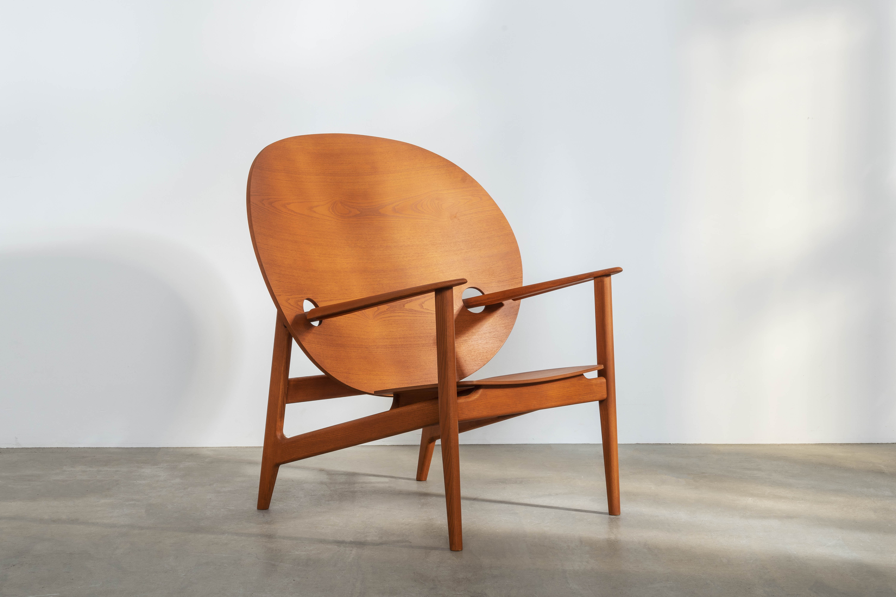
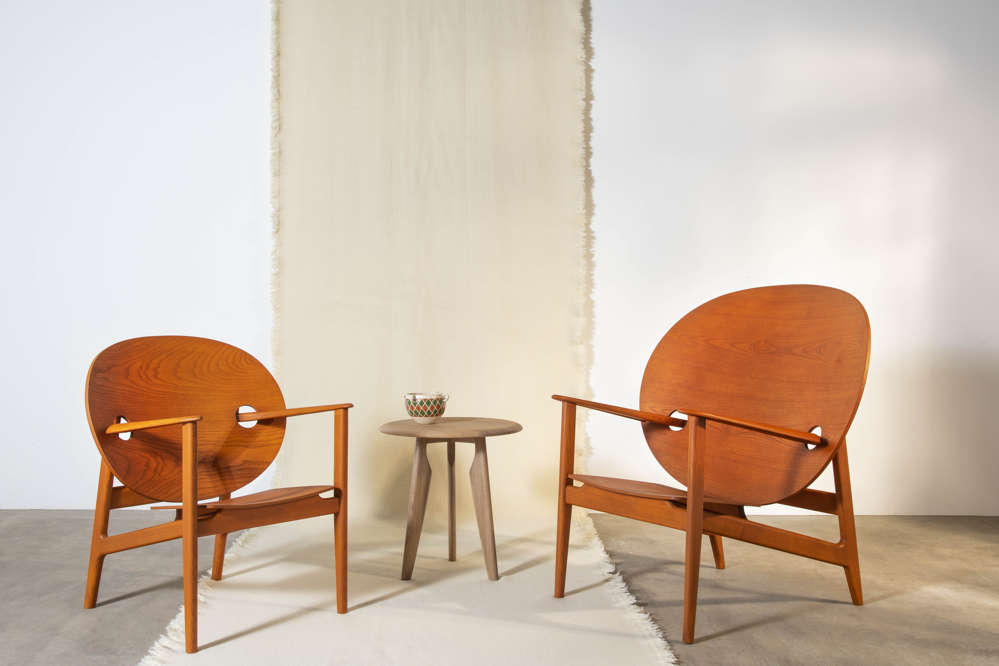
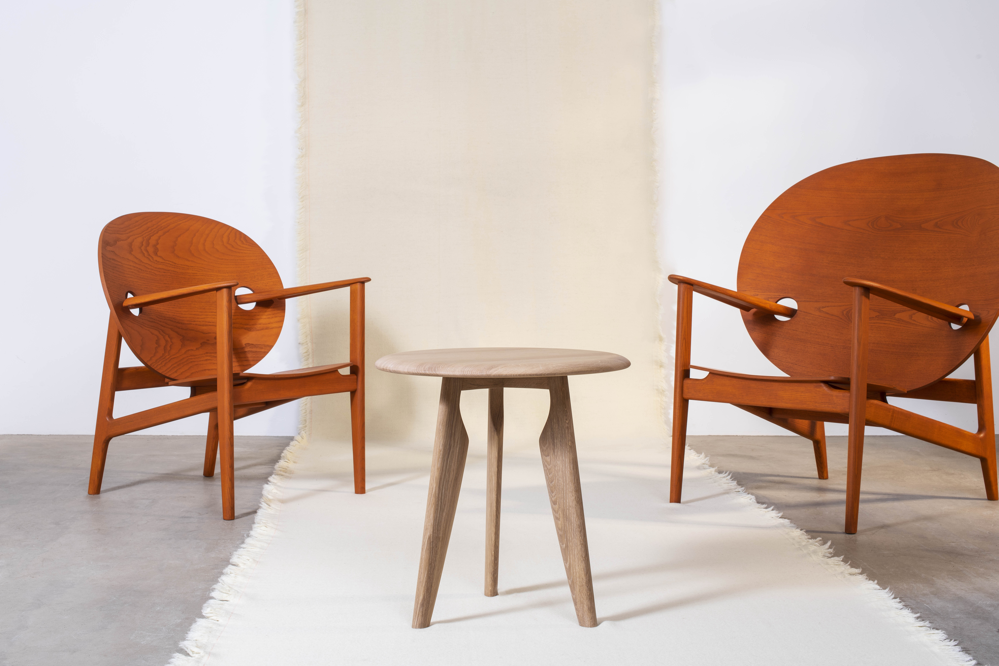

For several years, since graduating from 3D Product design at Northumbria Uni, we have been following the career of hot new designer, Mac Collins. After a hiatus on our design crush interview series, which has featured talents that we find exciting and inspiring, who better to re-launch a new series of interviews than this huge talent, who burst onto the design scene with his vibrant blue modern classic in the making, the Iklwa Chair. Now launched to market in a new colourway and with additional pieces to make a collection. Having collaborated with impressive Brit brand, Benchmark, it was the perfect time to get some insight into Mac’s creative process and the driving force behind his boundary pushing career path.
"Stories from my family...have had such a huge effect on defining my identity."

How did you start out in design?
Initially, I had considered going down a fine at/sculpture route, however I ended up studying 3D design: Product and Furniture at Northumbria University as I wanted to gain an understanding of processes, materials and functionality. I hoped I could tie these attributes together into contextually explorative and expressive projects.
What inspires you?
There is so much that inspires me, particularly stories from my family that have had such a huge effect on defining my identity. I am also inspired by other creatives from all points of the spectrum – photography, painting, sculpture, poetry, fashion design, I don’t think there should be boundaries between disciplines and I hope to cross those lines with collaborations in the future. I particularly appreciate creators who position human experience at the centre of their work, whether that is achieved through photography, sculptural installation or design.
Do you work from your own studio space? Tell us about what it has been like to design in the current situation.
It has been tricky. I had been out of the workshops for most of lockdown so making models and designing from home. I am in the process of putting together my own primitive workshop and hopefully will be able to get back on it.

What is the job of design in this current world we live in?
It depends on the kind of design. But ultimately, the role of design should be to help enact and bring about social change towards a future that has a better chance at longevity. Longevity in terms of sustaining a habitable planet for us all, evening out social injustice and pulling back together a diverse society that is being viciously polarised.
You are constantly developing your style and process. What drives you?
Meeting new people and embarking on new projects that open channels I had not imagined. As I move forward, I want to explore the effect of objects and installations on people and their emotions. I want to push my design in a speculative direction. I still bring in cultural influences from my identity into my work and I am still calling on stories from my family to inspire pieces.
How do you connect with colour?
Colour ties into the wider context of the object or project. The narrative will dictate the colour, so it depends on the story. The colour or finish is, of course, the last process to be carried out, however it is beyond just adornment. Colours can conjure up certain feelings or create certain atmospheres, which becomes an important consideration for something that people will interact with physically.
What do you do to relax after a hard day designing?
All the classic self-indulgent stuff – reading, podcasts and TV. I have also been getting more into cooking recently and have discovered (as many have before me) that it is a really effective way to change my focus after a busy or stressful day.
Work, life, play – how do you balance them?
I don’t, I don’t think I am very good at balancing these things. I think this is hard to achieve when you are always thinking about current or potential projects. Like many people in the creative sector, my work is also what I do for play, but is also still stressful and tiring. And both this work/play is in my head at all times of my life. Maybe this is something I need to work on separating.

"Colours can conjure up certain feelings or create certain atmospheres, which becomes an important consideration for something that people will interact with physically."

Futurism or classicism?
Futurism, but of course informed by what has gone before to some extent. We have got to move forward – change is essential for everything. Many examples of classicism in architecture, design and art are beautiful to look at, but they are also often synonymous with empire and oppression and the flaunting of power and wealth derived from that oppression. I think futurism is more speculative and optimistic.
Art or design?
Each feeds the other, its six and two threes, in my opinion. I think it is important to bring contextual or emotive narratives into all areas of design. Equally, it is important that things do something, alongside commenting on the world around us. But I suppose that commentary could be considered a function in itself, should it effect human behaviour.
Home or away?
Away! (but maybe that is just because I have been home for so long now). The idea of going to places that I do not recognise, and feeling lost, excites me and I am looking forward to having that feeling again.
What advice do you have to any new designer right now?
I would say for new designers to reach out to people, connect with other creative individuals in their own field but also in different fields. Inadvertently, I have been doing this recently and I feel like I am learning a lot through these interactions. Wider connections and broader potential for collaborations.
And finally, if your home were a movie, what movie would it be (feel free to answer in relation to your current home or one you see in your future?
Tarantinos’, Jackie Brown, because if it was possible to capture the charisma of Pam Grier in that movie, in a space, that’s where I’d want to live.
For more info on the collection or how to order, please head to the Benchmark website. x


 2LG x Love Your Home
2LG x Love Your Home